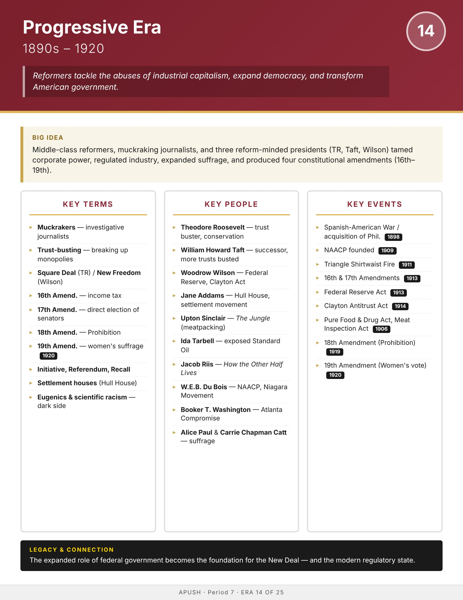

Era
Wise
AP History
AP United States History
Home
Course Sequence
Eras
Exam Prep
← Course Sequence
Era 14 of 25 · AP Period 7 · Lessons 33–34
Progressive Era
1890s–1920
Open infographic full size
Print

← ERA 13
American Imperialism
ALL ERAS
Eras index
ERA 15 →
World War I